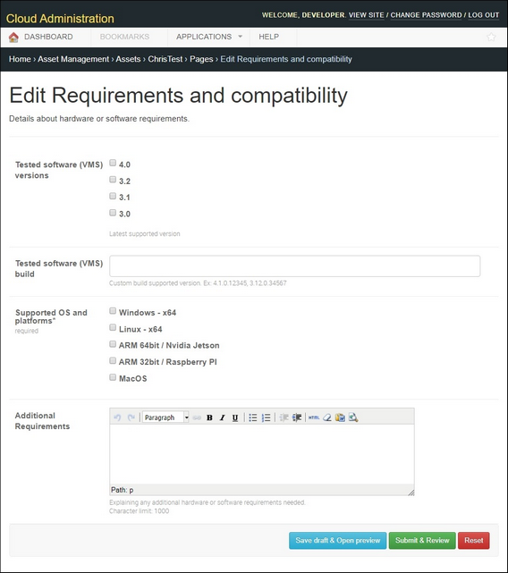

Use this page to provide details about performance and compatibility requirements.

Available fields are:
Tested software (VMS) versions – latest supported version.
Tested software (VMS) build – custom build versions that the integration was tested with.
Supported OS and platforms – operating systems and platforms that the integration supports.
Additional Requirements – additional hardware or software requirements.